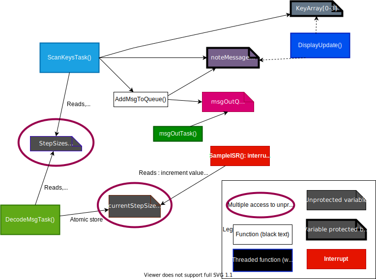
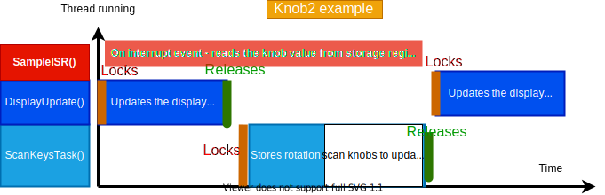

   
    
  
    <div class="docs-wrapper">
      
        <div class="docs-content">
            <div class="container">
                
                <article class="docs-article" id="section-2">
                    <header class="docs-header">
                        <h1 class="docs-heading">Threads and memory analysis</h1>
                        <section class="docs-intro">
                            <p>All tasks are performed via threading. If more threads are run than the CPU has cores then our threads are time-sliced. The amount of time that each thread gets is dependent on the priority of the thread. After the time-slice has passed the thread must give up the core to another thread. A built-in interrupt handler can save the state of the thread while the execution is paused. 
                                In some systems the interrupt handler has a standard interrupt time. Interrupts have priority over the main program, the main program is assigned whatever time is left over. 
                                                                 
                                </p>
                                
                        

                        </section><!--//docs-intro-->
                    </header>
                        <section class="docs-section" id="item-2-1">
                        <h2 class="section-heading">1.1 Priorities</h2>
                        <p>
                            The following threads were given priority as follows :
                        </p>
                                 
                <table class="table">
                    <thead>
                      <tr>
                        <th scope="col">#</th>
                        <th scope="col">Priority</th>
                        <th scope="col">Thread</th>
                      </tr>
                    </thead>
                    <tbody>
                        <tr>
                          <th scope="row">1</th>
                          <td>  DisplayUpdateTask Priority - 1                          </td>
                          <td> Description: Updates the LCD display
                            </td>
                        </tr>
                      <tr>
                        <th scope="row">2</th>
                        <td>MsgOutTask Priority - 2</td>
                        <td> Description: Receives message from queue and prints to serial monitor
                        </td>
                      </tr>
                      <tr>
                        <th scope="row">3</th>
                        <td>ScanKeysTask Priority - 3</td>
                        <td>Description: Monitors keys for changes and stores new values in the keyArray variable.</td>
                      </tr>
                      <tr>
                        <th scope="row">4</th>
                        <td>DecodeMsgTask Priority - 4</td>
                        <td> Description: Allows for changes to keys based on messages sent on the serial monitor.</td>
                      </tr>
                    </tbody>
                  </table>
                    </section><!--//section-->
                    
                <section class="docs-section" id="item-2-2">
                    <h2 class="section-heading">1.2 Time assignment</h2>
                    <p>
                        The scheduler will ensure that every thread gets a time slot and will often give more time to higher priority threads. Since interrupts are given priority over the main execution, we have reduced the number of interrupts.
                        The image below displays the logic for each task
                    </p>
                    
                </section><!--//section-->
                </article><!--//docs-article-->


                  
            <article class="docs-article" id="section-1">
                <header class="docs-header">
                    <h1 class="docs-heading">Shared data structures</h1>
                    <section class="docs-intro">
                        The image above suggests that <em>const StepSizes</em> and <em>currentStepSizes</em> can be accessed simultaneously. 
                        
                    
                    </section><!--//docs-intro-->
                    
                </header>
                    
                <section class="docs-section" id="item-2-2">
                    <h2 class="section-heading">2.1 RAM access - noteMessage</h2>
                   
                    <p>Variable <em>noteMessage</em> will display its latest updated value because it is defined as a volatile :</p>
                    <ol>
                        <li>ScanKeysTask updates the variable based on the key pressed. </li>
                        <li>AddMsgToQueue reads the variable after it was updated to add it to the queue of messages to print. These two events happens sequentially so the same element will not be accessed at the same time - they run in the same thread. </li>
                        <li>DisplayUpdate has a greater priority than scanKeysTask and its frequency is 10 times greater. When noteMessage is updated, it will wait for scanKeysTask to release the semaphore and display the new value. There is no deadlocks because of the use of semaphores.</li>
                    </ol>
                    <p>Declaring the variable as a volatile directs the compiler to load it from RAM instead of a storage register. The compiler will write into a temporary storage register and it can read from RAM at the same time. If two threads read a volatile at the same time, it is possible that they will access the same element in RAM. This is prevented by using semaphores to lock the variable whilst it is changed. </p>
                </section><!--//section-->
                
                <section class="docs-section" id="item-2-3">
                    <h2 class="section-heading">2.2 Simultaneous read - StepSizes </h2>
                    <p>The main problem with multiple threads is mutability. Declaring StepSizes as a const restricts this. Any immutable data is thread safe because there is no risk for several threads to read the same data concurrently, stepSizes will never change.</p>
                </section><!--//section-->
                
                <section class="docs-section" id="item-2-3">
                    <h2 class="section-heading">2.3 Read and write - currentStepSizes </h2>
                    <p>The threads will not run concurrently. DecodeMsgTask will write to currentStepSizes, this value will be updated to RAM. The interrupt may try to concurrently access part of this variable. Using an Atomic Store will only write the bits we need. Store and reading can be done in two separate parts in memory, the interrupt will hold the correct value for currentStepSizes </p>
                    

                </section><!--//section-->

                <section class="docs-section" id="item-2-3">
                    <h2 class="section-heading">2.4 Locked knobs  </h2>
                    <p>Knobs can be updated at the same time, several threads will access them. This may result in some delay as a thread may read a local copy that has been outdated by another thread. The note will eventually be corrected. </p>
                    

                </section><!--//section-->

                
            </article>
                
            </div> 
        </div>
    </div><!--//docs-wrapper-->
        
       